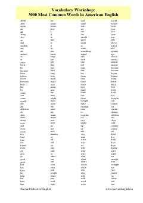

3MAmerika ingliz tilidagi eng ko'p qo'llaniladigan 3000 ta asosiy so'zlar to'plami.
Ushbu qo'llanma Amerika ingliz tilida eng ko'p qo'llaniladigan 3000 ta asosiy so'zlar ro'yxatini taqdim etadi. Harvard ingliz tili maktabi tomonidan tayyorlangan ushbu lug'at so'z boyligini tez va samarali oshirishga yordam beradi. Til o'rganuvchilar uchun kundalik muloqotda eng kerakli so'zlarni o'zlashtirishda qulay manbadir.